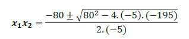

Resolución de ecuaciones de segundo grado con una incógnita
Encontrar la solución de una ecuación de segundo grado significa hallar los valores de x de manera tal que satisfaga dicha igualdad.
Se pueden presentar distintas situaciones, dependiendo de las características de la ecuación. Veamos algunos casos.
Caso 1: El término lineal es nulo
Ejemplo 1: En la ecuación
Podemos despejar simplemente la variable x:
Por la definición de raíz cuadrada y del módulo, podemos expresar la solución de la siguiente manera:
Comprobamos:
Ejemplo 2: Resolvemos la siguiente ecuación:
Procedemos de la misma manera que en el ejemplo anterior, despejando la variable x:
En este caso decimos que la ecuación no tiene solución en el conjunto de los números reales.
Caso 2: El término independiente es nulo
Tenemos el siguiente problema:
Supongamos que un jugador de fútbol patea un tiro libre, de modo tal que la trayectoria de la pelota, mientras se encuentra en el aire, es la parábola que corresponde a la siguiente ecuación:
Donde y es la altura en metros de la pelota cuando esta se encuentra a x metros de distancia horizontal desde el punto en el que fue lanzada.
Para calcular cuál fue el “alcance” del tiro libre, es decir, a qué distancia tocará el suelo la pelota, planteamos la ecuación:
Extraemos factor común x:
Consideramos las dos posibilidades para que se cumpla la igualdad:
Estos valores se corresponden a los puntos inicial y final de la trayectoria. La gráfica representa el problema y la solución.
Entonces el tiro libre tiene un alcance de 1.4 metros.
Caso 3: La ecuación es completa
En la ecuación podemos aplicar la fórmula resolvente.
Cuando la ecuación tiene la forma se pueden obtener dos soluciones, , reemplazando los coeficientes a, b y c en la siguiente fórmula:
Para abreviar las reunimos en una sola fórmula:
El doble signo que aparece en la fórmula proporciona las dos soluciones x1 y x2 que tiene la ecuación.
Dicho esto, podemos dar solución al problema ejemplo planteado, según el cual queríamos encontrar en qué momento el destello alcanzaba la altura de 195 m:
Planteamos la ecuación:
Donde a = -5 , b = 80 y c = -195. Podemos utilizar, entonces, la fórmula resolvente.
Tenemos entonces:

Por medio de estos valores obtenemos las coordenadas para dar respuesta a nuestra pregunta del problema. Podemos decir que a partir de los 3 segundos, donde alcanza los 195 m de altura, el destello es visible en la base naval. Esto se mantiene hasta los 13 segundos; luego su altura es menor. En la gráfica podemos apreciar esto ya que las coordenadas de ambos puntos son simétricas.
Decimos que dos puntos de una parábola serán simétricos cuando tienen la misma imagen.

El siguiente video te permitirá comprender como resolver ecuaciones cuadráticas
Obra publicada con Licencia Creative Commons Reconocimiento Compartir igual 4.0